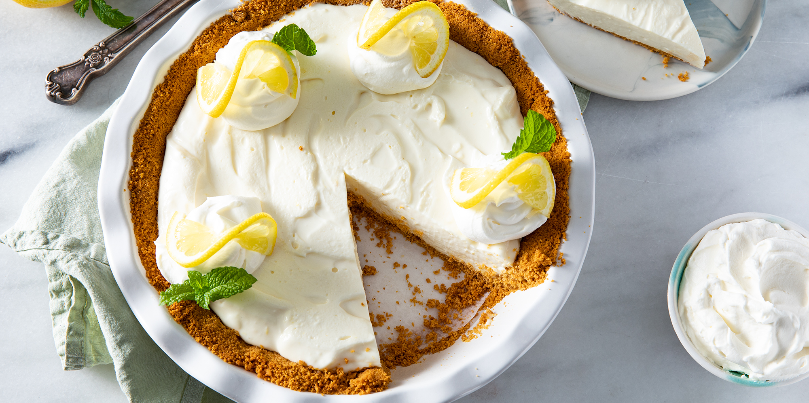

Lemon Icebox Pie III

Description
A family favorite when a no-bake, fast pie is needed. (And family members too small to use the oven can make
dessert!) Very pretty when garnished with whipped cream and mint leaves.
- 1 (9 inch) prepared graham cracker crust
- 2 (8 ounce) packages cream cheese, softened
- 1 (14 ounce) can sweetened condensed milk
- 2 lemons, juiced
- 1 teaspoon lemon zest
- In a medium mixing bowl, beat cream cheese until fluffy. Add condensed milk, lemon juice, and lemon rind. Mix
until smooth. Pour mixture into crust. Refrigerate at least 2 hours before serving. Garnish with whipped cream
and mint leaves if desired.